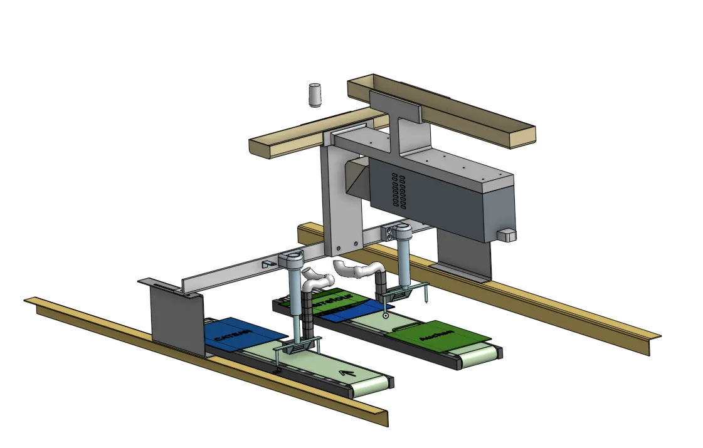

Observation & chronométrage
Suivre les opérations, mesurer les temps et distinguer ce qui crée réellement de la perte.
Process
Process intervient sur le terrain pour observer le fonctionnement réel, identifier les pertes, structurer les actions et concevoir des solutions utiles : méthode SMED, flux, implantation, CAO, Excel, checklists et outils simples.

Diagnostic terrain
Une amélioration efficace ne commence pas dans un fichier : elle commence par l’observation du terrain. Les déplacements, les accès, les temps d’attente, les réglages, les informations dispersées et les tâches répétitives sont analysés pour construire un plan d’action utile.
Suivre les opérations, mesurer les temps et distinguer ce qui crée réellement de la perte.
Identifier les trajets inutiles, les zones mal implantées et les manipulations répétées.
Améliorer les accès, la sécurité d’usage et la répétabilité des gestes.
Créer des tableaux Excel, checklists ou indicateurs pour suivre les actions dans le temps.

Méthode SMED
La démarche SMED permet de séparer ce qui doit être fait machine arrêtée de ce qui peut être préparé avant, puis de réduire, standardiser ou automatiser les opérations critiques.
CAO & implantation
Lorsqu’un aménagement ou une pièce doit être imaginé, la CAO permet de vérifier les volumes, les accès, les interférences, les dimensions et les contraintes avant réalisation.
Plans, mises en plan, vues 3D et photos terrain permettent aux responsables, opérateurs et fournisseurs de comprendre rapidement la solution proposée.
Cas concrets Process

Prise de cotes terrain, intégration autour de la machine, modélisation 3D et validation des accès.

Vues cotées, dimensions principales et support clair pour consultation, fabrication ou validation.

Passage de l’étude à une installation physique adaptée au fonctionnement du poste.
Flux & VSM
La cartographie permet de relier les étapes, les stocks, les temps, les attentes et les échanges d’information. Elle aide à prioriser les améliorations au lieu de traiter les symptômes isolés.

Outils simples
Process peut compléter l’amélioration terrain par des outils de suivi simples : tableaux Excel, checklists, indicateurs, plans d’action, synthèses ou supports de décision.



Process